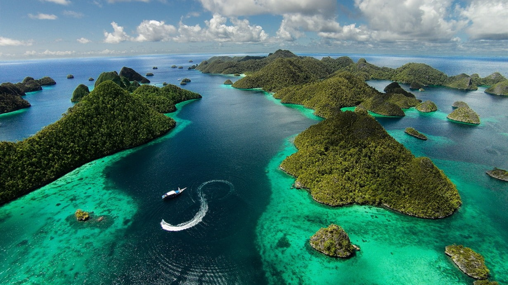
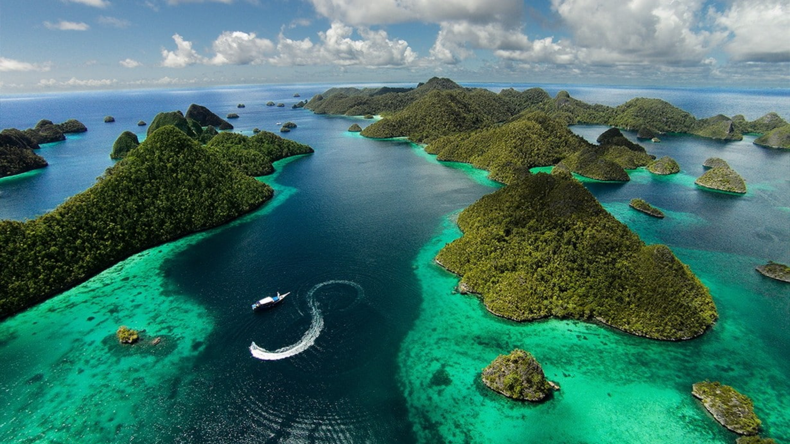

Mt. Bromo, Indonesia
Mt. Bromo, Indonesia
Mount Bromo
Mount Bromo adalah salah satu gunung berapi aktif, yang terletak di Jawa Timur, Indonesia.
Gunung ini juga terkenal sebagai salah satu objek wisata di Jawa Timur.
 
Mt. Bromo, Indonesia

Mt. Bromo, Indonesia
Mount Bromo adalah salah satu gunung berapi aktif, yang terletak di Jawa Timur, Indonesia.
Gunung ini juga terkenal sebagai salah satu objek wisata di Jawa Timur.
Candi Borobudur, Indonesia
Candi Borobudur merupakan peninggalan kerajaan Buddha pada masa lampau di
Nusantara dan menjadi candi Buddha terbesar di dunia. Candi ini adalah salah satu candi terkenal di Indonesia.
Raja Ampat, Indonesia
Raja Ampat adalah kepulauan yang terdiri dari banyak sekali pulau karang dan tersebar luas di seluruh wilayahnya,
sebuah kabupaten di Papua Barat. Raja Ampat memiliki salah satu dari 10 perairan terbaik di seluruh dunia.
Mt. Semeru, Indonesia
Gunung Semeru atau Gunung Meru adalah sebuah gunung berapi kerucut di Jawa Timur, Indonesia. Gunung Semeru
merupakan gunung tertinggi di Pulau Jawa, dengan puncaknya Mahameru, 3.676 meter dari permukaan laut.
Lagu kebangsaan adalah dimana lagu dijadikan sebagai lambang negara yang menjadi simbol persatuan dan kebanggaan masyarakat Indonesia.
Indonesia Tanah Airku
Tanah tumpah darahku
Di sanalah aku berdiri
Jadi pandu ibuku
Indonesia kebangsaanku
Bangsa dan Tanah Airku
Marilah kita berseru
Indonesia bersatu
Hiduplah tanahku
Hiduplah negeriku
Bangsaku Rakyatku semuanya
Bangunlah jiwanya
Bangunlah badannya
Untuk Indonesia Raya
Indonesia Raya
Merdeka Merdeka
Tanahku negriku yang kucinta
Indonesia Raya
Merdeka Merdeka
Hiduplah Indonesia Raya
Indonesia Raya
Merdeka Merdeka
Tanahku negriku yang kucinta
Indonesia Raya
Merdeka Merdeka
Hiduplah Indonesia Raya
Garuda pancasila
Akulah pendukungmu
Patriot proklamasi
Sedia berkorban untukmu
Pancasila dasar negara
Rakyat adil makmur sentosa
Pribadi bangsaku
Ayo maju maju
Ayo maju maju
Ayo maju maju
Garuda pancasila
Akulah pendukungmu
Patriot proklamasi
Sedia berkorban untukmu
Pancasila dasar negara
Rakyat adil makmur sentosa
Pribadi bangsaku
Ayo maju maju
Ayo maju maju
Ayo maju maju
Kulihat ibu pertiwi
Sedang bersusah hati
Air matanya berlinang
Mas intannya terkenang
Hutan gunung sawah lautan
Simpanan kekayaan
Kini ibu sedang lara
Merintih dan berdoa
Kulihat ibu pertiwi
Kami datang berbakti
Lihatlah putra-putrimu
Menggembirakan ibu
Ibu kami tetap cinta
Putramu yang setia
Menjaga harta pusaka
Untuk nusa dan bangsa
Kulihat ibu pertiwi
Sedang bersusah hati
Air matanya berlinang
Mas intannya terkenang
Hutan gunung sawah lautan
Simpanan kekayaan
Kini ibu sedang lara
Merintih dan berdoa
Menjaga harta pusaka
Untuk nusa dan bangsa
Tradisi adalah segala sesuatu seperti adat, kebiasaan, ajaran, dan sebagainya, yang turun temurun dari nenek moyang, dan indonesia memiliki beraneka ragam tradisi yang sangat menarik.
Pakaian adat adalah kelengkapan yg dipakai oleh seseorang, khususnya Indonesia yg menunjukan etis kebudayaan masyarakat Indonesia, dikarenakan Indonesia memiliki berbagai macam tradisi, tidak heran pakaian adat juga beranekaragam.
Ulos adalah pakaian adat Sumatra Utara dalam bentuk kain tenun khas Batak. Pada awalnya, ulos digunakan sebagai pakaian sehari-hari masyarakat Batak. Apabila dipakai oleh laki-laki bagian atasnya disebut hande-hande.
Pesa'an adalah salah satu pakaian adat Jawa Timur. Pesa'an ini memiliki keunikan dan memiliki ciri khas yang berbeda dengan pakaian adat daerah lainnya, hingga Pesa'an menjadi baju tradisional Jawa Timur. Pakaian adat ini digunakan untuk kaum laki-laki.
Mukuta dan Biliu merupakan sepasang pakaian adat Gorontalo yang pada dasarnya hanya dipakai ketika ada upacara pernikahan. Mukuta sendiri lebih biasanya hanya dipakai oleh seorang mempelai pria sedangkan untuk Biliu hanya dipakai oleh mempelai wanita saja.